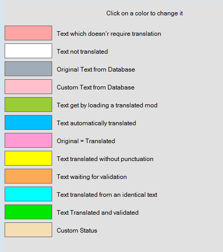
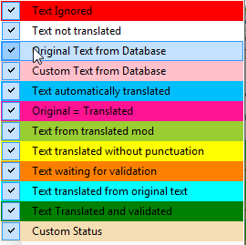

Miscellaneous
This window allows to specify the type of non empty lines that will be replaced after trigger any of the Automatic and Instant Translations form the five types of databases:
Mod in progress of translation
OnlyText Database
Main Database
Custom Dataase
External Database
TIP:
The order can be changed by drag and drop them.
To do it, just select any of the database types in the white frame, and then press on any of the seven line colors to specify the non empty lines replacement limits for the selected database. The lines are sorted from top to bottom, and all texts with the color equals or above the selected one, will be replaced by the Automatic and/or Instant translation tools.
By default, all the databases are configured to the second line level "Text from translated mod". This is the arranged list of the type of lines from top to down:
1.
Custom Text from Database
2.
Text from translated mod
3.
Text automatically translated
4.
Original = Translated
5.
Text translated without punctuation
6.
Text waiting for validation
7.
Text translated from original text
Allows to search, consult and edit the Main Database, create a new one and merge several databases by importing then. To switch to a different main database just check Change Database and select a database in the list. To create a new main database just choose <New>, at top of the list.
The window contains some of the Main Window tools with some new elements, but focused to work and modify the main database selected. However, here is possible to edit any field of the main database, even the ID, and also add new lines. But the more common use of this window is to modify the Translated field. The Custom field is just to have another translation of the same line, but it is very rarely used.
To start modifications, it is needed to check Modifications Enabled, and then just select a line in the Table Panel and make the desired changes in any of the three text fields Original, Translated and Custom). It is also possible to create and modify record identifiers (GRUP, ID, EDID, Field and Index), but don't touch it unless you know what you are doing.
To add a new line just press on Add Line and a new little window will open with the tools needed for the task. To import another EET/XML/SST/PRJ database press on Import and select it. The imported database will be added to the current database. If the database to import is a Morrowind TXT file, press on Import text file (Morrowind). The Purge incomplete entries button deletes all the lines that have the Translated or Custom fields empty, with no text.
To save any change made in the modified database, it is absolutely needed to validate them globally by pressing on Validate Modifications. New lines are validated individually in the Add Line window after creating them. Also, it is possible to reset the database to the previous state, if the lines have not been validated, by pressing on Cancel Modifications.
Finally, to apply the resulting database in the current translation in the Main Window, just press on Only with Main Database (Shift+F5) or globally by Instant translation of the selected text (F5), in the Edition menu.
_TIPs_
+
When you are in the Main Window, by pressing on the Search DB (F3):
-
If no cell is selected, the database window will open automatically without doing any search.
-
If a cell of a line is selected, the database window will open automatically searching for the data content of the selected cell in the column type (GRUP, ID, EDID, Original or Translated) to which belongs. For example, if the cell selected belongs to the EDID column, the search will be made only for the data in that column of the database.
-
If some text inside a Translated Text cell is selected, the database window will open automatically searching for that selected text.
+
The Group Panel and the Filter Bar can be used to quickly find or filter a specific line or lines text.
+
The Hide Custom checkbox hides the rarely used Custom text field.
+
If you need information about the GRUP, ID, EDID, Field and Index concepts, they are explained in the Glossary section of this tutorial.
+
The # and ⁋ buttons are explained in the Translate section.
+
In the Status Bar, at bottom, there is a global Line count of the database.
|
Search in Custom Database (SHIFT+F3) |
Allows to create, search, consult and edit a Custom Database, as well as merge several databases by importing then. To choose a custom database or switch to another, just check Change Database and select a database in the list. To create a new custom database just choose <New>, at top of the list.
The window contains some of the Main Window tools with some new elements, but focused to work and modify the custom database selected.
To begin modifications, it is needed to check Modifications Enabled, and then just select a line in the Table Panel, if it is a loaded existing database, or add a new line by pressing on Add Line, opening a new little window to do it. Then introduce the desired changes in the record identifiers (GRUP, ID, EDID, Field and Index), if needed, and in any of the three text fields (Original, Translated and Custom). The Custom field is just to have another translation of the same line, but it is very rarely used.
To import another EET/XML/SST/PRJ database press on Import and select it. The imported database will be added to the current database. The Purge incomplete entries button deletes all the lines that have the Translated or Custom fields empty, with no text.
To save any change made in the modified database, it is absolutely needed to validate them by pressing on Validate Modifications. New lines are validated individually in the Add Line window after creating them. Also, it is possible to reset the database to the previous state, if the lines have not been validated, by pressing on Cancel Modifications.
Finally, to apply the resulting database in the current translation, in the Main Window, just press on Only with Custom Database (Ctrl+F5) or globally by Instant translation of the selected text (F5), in the Edition menu.
_TIPs_
+
When you are in the Main Window, by pressing on Search in Custom Database (SHIFT+F3):
-
If no cell is selected, the database window will open automatically without doing any search.
-
If a cell of a line is selected, the database window will open automatically searching for the data content of the selected cell in the column type (GRUP, ID, EDID, Original or Translated) to which belongs. For example, if the cell selected belongs to the EDID column, the search will be made only for the data in that column of the database.
-
If some text inside a Translated Text cell is selected, the database window will open automatically searching for that selected text.
+
The Group Panel and the Filter Bar can be used to quickly find or filter a specific line or lines text.
+
The Hide Custom checkbox hides the rarely used Custom text frame.
+
If you need information about the GRUP, ID, EDID, Field and Index concepts, they are explained in the Glossary section of this tutorial.
+
The # and ⁋ buttons are explained in the Translate section.
+
In the Status Bar, at bottom, there is a global Line count of the database.
|
Search in OnlyText Database (Ctrl+F3) |
Allows to create, search, consult and edit an OnlyText Database, as well as merge several databases by importing then. To choose an onlytext database or switch to another, just check
Change Database and select a database in the list. To create a new onlytext database just choose <New>, at top of the list.
The window contains just the Original and Translated text fields to edit. So, it manages lighter informative databases than the others, and has less features, but can contains more basic data, streamlining the editing, searching and loading times.
This is very useful to quickly add new lines, and just fill the Original and Translated fields, without worrying about identifiers (GRUP, ID, EDID, ...). Also, allows to create, for example, a global TES Database, including the Main Database of Morrowind, Oblivion and Skyrim. So, if you have to translate a mod of Skyrim that includes the books of Morrowind, you can need to just press on Only with OnlyText Database (Alt+F5) or globally by Instant translation of the selected text (F5), in the Edition menu, and all the books will be translated instantaneously, just looking for the text that matches without the identifiers limitation.
To begin modifications, it is necessary to check Modifications Enabled, and then just select a line in the Table Panel, if it is a loaded existing database, or add a new line by pressing on Add Line, opening a new little window to do it. Then introduce the desired changes in the Original and Translated fields.
To import another EET/XML/SST/PRJ database, just press on Import File and select it. The imported database will be added to the current database. By checking Overwriting existing text, matching lines will be replaced, if not they will be ignored. -->
To save any change made in the modified database, it is absolutely needed to validate them by pressing on Validate Modifications. New lines are validated individually in the Add Line window after creating them.
Also, it is possible to reset the database to the previous state, if the lines have not been validated, by pressing on Cancel Modifications.
Finally, to apply the resulting database in the current translation, in the Main Window, just press on Only with OnlyText Database (Alt+F5) or globally by Instant translation of the selected text (F5), in the Edition menu, as said in the example above.
_TIPs_
+
When you are in the Main Window, by pressing on Search in OnlyText Database (Ctrl+F3):
-
If no cell is selected, the database window will open automatically without doing any search.
-
If a cell of a line is selected, the database window will open automatically searching for the data content of the selected cell in the column type (GRUP, ID, EDID, Original or Translated) to which belongs. For example, if the cell selected belongs to the EDID column, the search will be made only for the data in that column of the database.
-
If some text inside a Translated Text cell is selected, the database window will open automatically searching for that selected text.
+
The # and ⁋ buttons are explained in the Translate section.
+ In the Status Bar, at bottom, there is a global Line count of the database.
|
Search in current Mod (F4) |
The utility of this tool is to offer a quick filter access of the selected text/line, for consultation and/or edition without the need to redefine the filters or lose the line focus. Only the Translated text field and the comment line can be modified here though. Lines can be validated by pressing F10.
For example, to translate a line with the word "MoonPath", that it is not a common word but something specific to the mod, by searching for "Moonpath" in the mod database, it is possible to translate all the lines with it from here, to be sure of the consistency of the translation.
_TIPs_
+
When you are in the Main Window, by pressing on Search in Current Mod (F4):
-
If no cell is selected, the database window will open automatically without doing any search.
-
If a cell of a line is selected, the database window will open automatically searching for the data content of the selected cell in the column type (GRUP, ID, EDID, Original or Translated) to which belongs. For example, if the cell selected belongs to the EDID column, the search will be made only for the data in that column of the database.
-
If some text inside a Translated Text cell is selected, the database window will open automatically searching for that selected text.
+
The Group Panel and the Filter Bar can be used to quickly find or filter a specific line or lines text.
+
If you need information about the GRUP, ID, EDID, Field and Index concepts, they are explained in the Glossary section of this tutorial.
+
The # and ⁋ buttons are explained in the Translate section.
+
In the Status Bar, at bottom, there is a global Line count of the database.
|
Search in external Database (Shift+F4) |
This is a versatile temporal database (cannot be saved) that allows to load ANY type of database (even Primary or Custom), or make a new one from many types of game files. It can be used as alternative or complementary database. It also allows to translate mods from old versions that has suffer changes, and prevents the program to identify automatically them for this cause.
For example, if we have a new version of a mod to translate, and an older version translated but with changes in the EDID of the records and has merged or wrapped its texts, when we load the old EET/XML saved translation from the new mod version, nearly anything is translated.
So, by loading this old EET/XML saved file in the external database, it is possible to search for these changes while we translate, making the work easier. Also, we can use this database with the automatic translations tools. .
These are the supported formats:
Database files: EET XML
Bethesda files: ESM ESP
Bioware files: TLK ERF DAZIP
Bioware files (Weidu mod): TP2
TESV Translator files: SST
Tecra files: PRJ
Script files: PEX
_TIPs_
+
When you are in the Main Window, by pressing on Search in External Database (Shift+F4):
-
If no cell is selected, the database window will open automatically without doing any search.
-
If a cell of a line is selected, the database window will open automatically searching for the data content of the selected cell in the column type (GRUP, ID, EDID, Original or Translated) to which belongs. For example, if the cell selected belongs to the EDID column, the search will be made only for the data in that column of the database.
-
If some text inside a Translated Text cell is selected, the database window will open automatically searching for that selected text.
+
The Group Panel and the Filter Bar can be used to quickly find or filter a specific line or lines text.
+
If you need information about the GRUP, ID, EDID, Field and Index concepts, they are explained in the Glossary section of this tutorial.
+
The # and ⁋ buttons are explained in the Translate section.
+ In the Status Bar, at bottom, there is a global Line count of the database.
+
The Comment field is explained in detail in the Glossary section.
IMPORTANT:
This tool is still operative but unneeded after the release and updates of the Fast Import tool, which is better to perform this tasks.
Allows to create and edit databases from ESP/ESM Bethesda files and TLK Bioware files. If fact, it is the tool used by the programmer of this application to build the main databases for each game, extracting data directly from the main ESM plugins of the games. But it is also useful to create and manipulate databases from some mods, that can be handy to translate easily later.
For example, to translate mods like Better Sorting (which renames the objects of the game for a more logical classification in inventory in game), this tool greatly simplifies the task, avoiding you the need to build your own database manually.
_HOWTO_
1.
SELECT FILE:
The first step is to choose a file from the File dropdown list, if exist, or opening a new one from the Browse button.
NOTE:
If the mod uses localized strings, the File drop-down list will be filled with different choices.
2.
ANALYZE FILE:
First, the ability to analyze everything or just one group is offered in the left dropdown list. Then, choose the way how data must be added to the table. There are four options:
-
Overwrite existing
-
Update only
-
Insert only
-
Do not use the ID
Once done, press on Start Analysis and wait until the table is filled.
OPTIONAL:
At this point, it is possible to introduce modifications manually in the table, although it is uncommon, because it is more comfortable to do it in the other database tools that offers the program. Also, the Preview button shows what will be added to the database and what will be updated.
3.
IMPORT FILE:
Finally, to save data, is needed to import the table into a new or an existing Primary or Custom database. To do this, just follow this steps:
3.1
Choose one of the two types of databases, Primary Database or Custom Base, from Import in. This will unlock one or another dropdown databases list available, down left or down right, depending on which one is selected.
3.2
In the dropdown list unlocked, choose a new or an existing database to import the table data.
3.3
Specify the column when the data must be imported. This is made at Import in the column, and there are three options:
-
Original:
Choose this option to import the text lines of the file analyzed as original language.
-
Translated:
Choose this option to import the text lines of the file analyzed as translated language.
-
Custom:
This column is very rarely used as an alternative to the translated column. So, don't use it unless you know what are you doing.
3.4
Press on the Start Importation button to finish the work.
3.5
If there is a translated version of the file imported, then repeat the four previous steps, but importing it in the Translated column in the step 3.3.
This way, the database will be fully translated automatically.
For example, to create the Main Database of Skyrim, these were the steps followed by the author of this program:
1.
Created a New Primary Database.
2.
Analyzed Skyrim.esm first in English.
3.
Chose Original in the Import column and pressed Start Importation.
4.
Analyzed Skyrim.esm first in French.
5.
Chose Translate in the Import column and pressed Start Importation.
As a final tip, in the Status Bar at bottom, there is a global Line count of the database.
Fast Import is similar to the older Importation tool, but it is more up-to-date and has become the default tool for these tasks. The finality of both is the same, to create/compose massive Main Databases from the original games data, but this fast version is easier to use and adds some new features. It is also more focused for manual editing, and simplifies the analysis and import tasks to make them more intuitive. So, depending on the needs, it can be better to use one or the other, but in general Fast Import self-sufficient.
_WINDOW_
Add a MOD/XML file/EET file:
Allows to open, analyze and import the data of several file formats into the table grid of this window. There are five type of files available:
Bethesda Files:
ESP & ESM
Bioware Files:
TLK ERF DAZIP & TP2(Weidu Mod)
Battlefront Files:
LVL
Database Files:
EET XML
TIP:
It is possible to select and open several files at once.
Reset:
Deletes all data in the table grid.
Analize Scripts Files:
If checked, it will import the text of the scripted lines..
Replace Lines by Default:
If checked, the lines with text in the table will be overwritten by the text of the matching lines imported.
Filter Bar:
Can be used to search specific data, if needed.
Table:
Display all the data imported arranged in rows and columns. It is fully editable.
Display identical texts:
If checked, the lines with exactly the same text in the Original and Translated fields are shown and colored with maroon. If not, they are hidden.
Display different texts:
If checked, the lines with differences (included empty vs no empty) in the Original and Translated fields are shown and colored with light orange. If not, they are hidden.
Display ONLY text without correspondace:
If checked, displays only the non translated lines, hiding the translated ones.
ID:
Allows to visualize and modify the ID field of the line.
EDID:
Allows to visualize and modify the EDID field of the line.
Original:
Allows to visualize and modify the Original field of the line.
Translated:
Allows to visualize and modify the Translated field of the line.
Custom:
Allows to visualize and modify the Custom field of the line. It is very rarely used, but some translators use it to include an additional translation. .
Create a new database:
Allows to save the data in the table into a new EET database. There are four types available: Main, Custom, OnlyText and External databases.
Import into an existing database:
Allows to save the data in the table into an existing EET database.
There are four types available: Main, Custom, OnlyText and External databases.
Purge incomplete entries:
This is sometimes necessary because the lines are not always fully complete, due to some of them exist in a language but not in another.
Lines count:
Shows, in the Status bar, the total number of lines of the table grid.
_HOWTO_
NOTE:
This is a detailed general purpose way to use this tool. The examples below show specific ways to create different types of databases.
1.
Open the Fast Import window from the Database menu, select Add a MOD/XML/EET file and choose the file to analyze. There are several types of files to open: ESP, ESM, TLK, ERF, DAZIP, TP2, EET and XML.
Depending of the file type loaded, the program will include it in one of two possible type of frames, one for MOD files (ESP, ESM...) another for DATABASE files (EET, XML), within a single pop-up windows. If other files are loaded later, by the same procedure or by drag and drop it from Windows Explorer, other frames will be opened in the same pop-up window. It is possible to mix MOD frames and DATABASE frames.
2.
Now is time to setup the opened frame/s. The main task here is to choose the column (Original, Translated, Custom or none) of the table grid in which to put the text lines of the MOD or DATABASE loaded. The mods only contains one language but databases can contain two, for bilingual, or three if it includes a new or tweaked language in the custom column. Below is shown the configurable options for the two types of frames:
MOD FRAMES
NOTE:
Look at the examples 2 and 3 below to see how it works in practice.
+
Tittle of the mod + Directory Path + Image of the game:
This part is just informative.
+
Import the mod into the column:
Choose the column of the table in which import the text lines of the mod.
+
Encoding:
Choose the character encoding for the mod to analyze. Fallout 4 mods do not need this tweak, because always use UTF-8.
+
Replace existing values:
Check it to overwrite the lines with text in the table by the text of the matching lines imported. It does exactly the same that Replace Lines by Default in the previous windows, if fact they are linked, an if you checked it there it will appear checked here, but there it acts globally and here it can be checked individually by frame.
+
Import scripts:
Check it to import the text of the scripted lines. It does exactly the same that Analize Scripts Files in the previous windows, if fact they are linked, an if you checked it there it will appear checked here, but there it acts globally and here it can be checked individually by frame.
DATABASE FRAMES
NOTE:
Look at the example 1 below to see how it works in practice.
+
Tittle of the mod + Directory Path + Image of the game:
This part is just informative.
+
Import the column... in the column
+
Replace existing values:
Check it to overwrite the lines with text in the table by the text of the matching lines imported. It does exactly the same that Replace Lines by Default in the previous windows, if fact they are linked, an if you checked it there it will appear checked here, but there it acts globally and here it can be checked individually by frame.
+
Import scripts:
Check it to import the text of the scripted lines. It does exactly the same that Analize Scripts Files in the previous windows, if fact they are linked, an if you checked it there it will appear checked here, but there it acts globally and here it can be checked individually by frame.
3.
After setting the frames, press OK to return to the Fast Import window.
OPTIONAL.
At this moment, it is possible to edit manually the data of the table grid, if required. The ID, EDID, Original and Translated fields editions are allowed. The Purge incomplete entries option is specially necessary when importing data from bilingual mods, because the lines are not always fully complete, caused by some of them that exist in a language but not in another.
4.
The last step is to save the work by importing the table data in a new or an existent database. To do it, just press on one of the two buttons in the lower part of the window, as detailed below:
Create a new database
Allows to save the data of the table into a new EET database. There are four types available: Main, Custom, OnlyText and External databases. To do it, just choose one of them, write a name, and press OK. To make the database available for the translation, go to the Databases in the Options window, and select the corresponding database.
Import into an existing database
Allows to save the data of the table into an existing EET database. There are four types available: Main, Custom, OnlyText and External databases. The database to import must be selected in the corresponding dropdown list in Databases in the Options window for any of the four types. Then return to the Fast Import window, press on Import into an Existing Database button, choose the database to import data, and press OK. If the option Overwrite existing lines is checked, all the matching cells will be overwritten by the new ones, except those in which the Original and Translated cells are equal.
_EXAMPLE 1_
Import data from DATABASE
-
Converting a Main Database from EN/FR to FR/EN
1.
Open the "Fast Import" window in the Databases menu.
2.
Select Add a MOD/XML/EET file and choose the EN/FR database and open it, or just drag and drop it.
3.
Tweak the emergent window in this way:
Import column:
Original
In the column:
Translated
4.
Select Add a MOD/XML/EET file and choose the EN/FR database and open it again, or just drag and drop it.
5.
Tweak the emergent window in this way:
Import column:
Translated
In the column:
Original
6.
Press on OK to apply the importation of the data to the table of the Fast Import window.
7.
Select Create a New Database, choose a name and save it. In this case chose to save it as database, so it was saved in the main databases folder to select it easily from the Databases in the Options window.
_EXAMPLE 2_
Import data from MOD
-
Creating a bilingual database from mods
1.
Open the Fast Import window in the Database menu.
2.
Press on Add a MOD/XML/EET file, select one or more mods, then OK.
3.
A new window emerges showing one or more frames to configure each selected mod separately.
4.
Select the mod to include in the Original column, and the same mod in a different language to include in the Translated column.
OPTIONAL.
If necessary, elect the right character encoding for the language to analyze in each frame (not needed for Fallout 4, only uses UTF-8).
5.
Press on OK to apply the importation of the data to the table of the Fast Import window.
6.
Press the Purge incomplete entries button. This is sometimes necessary because the lines are not always fully complete, because some of them exist in a language but not in another.
7.
Select Create a New Database, and choose the type and the name. To do it available for translating mods, go to Databases in the Options window and select it from the dropdown menu of the corresponding database type.
_EXAMPLE 3_
Import data from GAME
-
Creating a Skyrim EN/FR Main Database from ESMs.
NOTE:
This can also be done by saving the databases for each single language from the ESM, and then merging them, as stated in the previous example 2.
1.
Open the Fast Import window in the Database menu.
2.
Press on Add a MOD/XML/EET file, and select the Skyrim.esm in ENGLISH and the Skyrim.esm in FRENCH, and press OK.
3.
A new window emerges showing the two frames to configure the mods in both languages.
4.
Now select Original in the frames corresponding to the ESM in English, and Translated in the frame corresponding to the ESM in French.
5.
Select the right Encoding in the dropdown list, in this case Windows-252. (Fallout 4 only uses UTF-8).
6.
Press OK to apply the importation of the data to the table of the Fast Import window.
7.
Select Purge incomplete entries. This is sometimes necessary because the lines are not always fully complete, due to some of them exist in a language but not in another.
8.
Select Create a New Database, and choose the type and the name. To do it available, go to Databases in the Options window, and select it from the dropdown menu of the corresponding database type.
Analysis of all the mods in a folder
This is another temporal database search tool. In this case, the database is created temporally extracting all the translation data available in the mods found in a selected folder after analyze them.
The Filter Bar is the only interactive field, to carry out searches.
This is useful, for example, if there are a mod with several similar but not identical plugins or different versions of a mod and is needed to filter an IP (or other field), to see if all the lines in all the plugins have the same text or not. Once studied, a strategy to solve the possible special situations found, and decide which other tool of the program to use.
The window also offers a Line & Characters Count in the Status bar.
Analyze several mods
This tool is exactly the same as above with the only difference that allows the user, exactly, which mods in a folder will be analyzed.
Compare 2 mods
This is a similar to the previous two analysis tools, but focused to the comparison of two mods. The only purpose here is that, compare them to find differences and similarities in an informative way. To do it, just browse the two mods to compare, and press on Analize. After a while, the data will be shown in the table grid, using different columns to each mod.
The Filter Bar can be used to search specific data, if needed. There are also three additional filter checkeable options:
Display identical texts:
If checked, the lines with exactly the same text in the Original and Translated fields are shown and colored with green If not, they are hidden.
Display different texts:
If checked, the lines with differences (included empty vs no empty) in the Original and Translated fields are shown and colored with light orange. If not, they are hidden.
Display ONLY text without correspondence:
If checked, displays only the non translated lines, hiding the translated ones.
In the Status Bar, at bottom, there is a global Line count of the database.
Add selected lines to Custom Database
Adds and validates the selected lines automatically to the Custom Database.
Add selected lines to TextOnly Database
Adds and validates the selected lines automatically to the TextOnly Database.
Adapt lines size
Checking this option, the text of the line is shown until the border of the cell, removing the ellipsis inserted by default. This is just an "aesthetic" tweak.
Changes lines colors
Allows to change the default colors for every type of line state. Just click on the color rectangle and choose the new color to your taste.

Text which doesn't require translation:
Allows to change the color of the lines where the text doesn't require translation.
Text not translated:
Allows to change the color of the lines where the Translated Text field is empty.
Original Text from Database:
Allows to change the color of the lines translated from the Translated field of the databases.
Custom Text from Database:
Allows to change the color of the lines translated from the Custom field of the databases.
Text get by loading a translated mod:
Allows to change the color of the lines translated from Load an already translated mod in the Translation menu.
Text automatically translated:
Allows to change the color of the lines translated by any of the autotranslation tools.
Text waiting for validation:
Allows to change the color of the lines translated manually but has not been validated yet.
Text translated from original text:
Allows to change the color of the lines translated automatically from the original text but does not match exactly with all the fields (GRUP, ID, EDID, Original...) in the databases.
Text translated and validated:
Allows to change the color of the lines validated after being translated manually, or automatically when all the fields matches the (GRUP, ID, EDID, Original...) in the databases.
Text translated without punctuation:
Allows to change the color of the lines that were translated automatically from the internal dictionary without punctuation.
Original = Translated:
Allows to change the color of the lines where the Original and Translated fields have exactly the same text.
Display Line Images
The toggle checkbox allows to enable/disable the option to show a row to the left of the table grid of the Main Window, showing some little icons describing the type of line. The function is merely visual, for quick identification. These are some of them:
Dialog - Is represented by a comic balloon.
NPCs Sex - There are icons for male and female.
Key - A key image for ingame door keys entries.
Script - Is represented by a papyrus.
Display Linked mods lines
If checked, displays a frame under the table grid in the Main Window, showing the lines that are linked to the current selected line. It is common in dialogs and scripts lines, which can be linked to several other lines, and very useful to meet the overall context of the line translated. The books generally are also linked to the tittle line and vice versa.
Display suggestions
If checked, displays a frame under the table grid in the Main Window, showing a list of lines containing at least one word in common with the line to translate. It is useful to know which is the translation of that word or text in the game, and to use it as "fast dictionary" to translate doubtful words.
Display comments
Displays the full script line of the selected line comment. Just for reference. It can be edited, but it is not advised to do it here.
Display "Validate Line" button
Show/hide the validate button "V" to the right of the table grid in the Main Window, for quick line validation.
Display "Unvalidate Line" button
Show/hide the unvalidate button "X" to the right of the table grid in the Main Window, for quick line unvalidation.
Display "Custom Status" button
Show/hide the custom status button "C" to the right of the table grid in the Main Window, as a warning mark of the line.
Display "Ignore Line" button
Show/hide the ignore line button "I" to the right of the table grid in the Main Window, to avoid to translate the line.
Sort by line status
Arranges the table grid lines grouping them by the status line colors.
Original sorting
Restores the order of the table grid lines to the original order of the mod. Very useful if you changed it by pressing on the header of the columns.
Line log
Opens a window showing the history of modifications of the selected line, offering the possibility to restore old values. The TopMost Window checkbox option allows to stick the window to always be on top of other windows, for easy monitoring and edition.
Full log
Allows to visualize all the changes made in the lines in the translation session, purging them when you close the translation or exit the program. Unlike the previous Line log tool, full log is not limited to one line, showing all lines at a time.
This is useful, for example, to revise all the lines that were translated automatically by any of the tools of the program, and revert the changes in some erroneous lines by selecting them and pressing Back to the previous translation of the selected lines. The Purge logs deletes all the logs of the translation session.
Display modified lines on the Main Window
If checked, a new frame is opened at bottom of the Main Window showing line modifications made by automatic tools. It is configured in the Miscellaneous tan of the Options window, and depends on if the feature is active in Automatics, and if it is checked in Show modified lines list when.

Text ignored
The line takes this color when the text doesn't require translation.
Text not translated
The line takes this color when the Translated Text cell is empty.
Original Text from Database
The line takes this color when the text is translated from the Translated field of the databases.
Custom Text from Database
The line takes this color when the text is translated from the Custom field of the databases.
Text automatically translated
The line takes this color when the text is translated by any of the autotrasnlation tools.
Original = Translated
The line takes this color when the Original and Translated fields have exactly the same text.
Text from translated mod
The line takes this color when the cell has been translated from Load an already translated mod in the Translation Menu.
Text translated without punctuation
The line takes this color when the cell has been translated from Load an already translated mod in the Translation Menu.
The line takes this color when the lines has been translated automatically from the internal dictionary without punctuation.
Text waiting for validation
The line takes this color when the text was translated manually but has not been validated yet.
Text translated from original text
The line takes this color when the text was translated automatically from the original text, but does not match exactly with all the fields (GRUP, ID, EDID, Original...) in the databases.
Text translated and validated
The line takes this color when the cell has been validated after being translated manually, or automatically when all the fields matches the (GRUP, ID, EDID, Original...) in the databases.
ORIGINAL Characters number > 0
This tool will filter the Original Text lines in the table grid, showing only those whose
length is greater than the number of characters indicated. This is useful to detect automatically the lines that exceed the number of characters limit in some games, allowing the user to correct them
easier.
TRANSLATED Characters > 0
This tool will filter the Translated Text lines in the table grid, showing only those whose length is greater than the number of characters indicated. This is useful to detect automatically the lines that exceed the number of characters limit in some games, allowing the user to correct them easier.
Apply
It is needed to apply the changes made in this menu, after check or uncheck any option.
Reset
Resets the changes made in this menu to the original state.
IMPORTANT:
The program detects automatically if MS Word is installed in the system. If not found, the feature is disabled.
Find Spell Mistake
IMPORTANT:
The Spell Check option must be checked in the # menu of the Original and/or Translated fields in the Main Window to activate it.
Triggers a misspelling check for orthographical errors in all lines of the Table Grid one by one. Every time it is pressed, the tool will search for the next line with error/s, and so on. This tool depends on the setup made in the Configure Dictionaries window below.
Verify Grammar and Spell of Selected Line (MS Word)
Triggers a spelling and grammar verification of the selected line with MS Word. After pressing, a window will popup (sometimes it is opened in background, behind the translator window) showing the mistakes in red, and offering to option to correct them manually and automatically. This feature only requires to have installed MS Word, and it is independent of the setup in the Configure Dictionaries window below, and the active dictionary is the one selected in the popup window.
Configure Dictionaries
Allows to setup orthographical and grammatical dictionaries separately for each type of field (Original, Translated and Custom). There are two types of dictionaries to choose; Hunspell and MS Word for both, Spell Check and Synonyms features. The Hunspell dictionaries are recommended for misspelling, because they are faster, but MS Word dictionary also allows to correct grammar mistakes too.
_WINDOW_
ORIGINAL Fields:
Corresponds to the Original fields existing in the Main Window and some of the database tools of the program.
TRANSLATED Fields:
Corresponds to the Translated fields existing in the Main Window and some of the database tools of the program.
CUSTOM Fields:
Corresponds to the Custom fields existing in some of the database tools of the program.
Spell Check:
The dictionary selected under this frame will be used for orthographical misspelling in any editable Original, Translated, Custom textbox field of the Main Window and Databases. The errors are indicated by underlining the incorrect words with a red wavy line.
Synonyms:
Helps to find words with similar meaning while you are translating. It can be accesses by right clicking on a word in any editable Original, Translated, Custom textbox field of the Main Window and Databases.
TIP:
It is not necessary to select the word, just click on it directly, and the synonyms option will appear at bottom of the contextual menu if the word is found in the dictionary.
It can be configured separately for the Original, Translated and Custom fields, offering the choice to use Hunspell or MS Word dictionaries with some languages to select. You can get more Hunspell Thesaurus Dictionaries for other languages and install them manually in the /Dictionaries folder inside the path you installed the this program. The name of Thesaurus dictionaries starts with th_ and ends with the extension .dat, for example, th_en_US.dat.
Use Hunspell:
If checked, the program will use the Hunspell dictionary in the language selected, for spellcheking the texts of the corresponding field type.
Use MS Word:
If checked, the program will use the internal MS Word dictionary in the language selected, for spellcheking the texts of the corresponding field type.
_HOWTO_
Just choose one of the two dictionaries, Hunspell or MS Word, and a language from the dropdown list, for each of the three type of fields (Original, Translated and Custom) you need to use. Then, press OK and be sure that the Spell Check option is checked in the # menu of the Original, Translated and/or Custom fields in the Main Window or Databases.
Mods Consistency
IMPORTANT:
If you add or remove mods in your game Data folder while you have a previous consistency analysis window opened, you need to open the Data path file explorer and select it again, to force the tool to rebuild the list of mods presents.
Allows to detect visually text conflicts between several mods loaded at the same time. If more than one mod change the same text, the tool will only show the potentially inconsistent lines of the active mods after analisys, allowing to fix them manually by dragging and dropping.
_WINDOW_
Game Selection:
Dropdown list to choose the active game for the mods to load.
DATA Folder:
Field to select the Data folder path of the Bethesda game chose above, where mods are installed.
Plugins File:
Field to select Bethesda games Plugins.txt file, usually found in C:\Users\GStation\AppData\Local\GAME_NAME\Plugins.txt It contains the list and load order of the installed mods.
Start Analysis:
Button to start the analysis of all the active/checked mods in the Left Table Frame (see below) of this window, It will detect the line texts inconsistencies/conflicts, and will report them in the Right Table Frame (see below) of this window.
Left Table Frame:
Lists all the mods in the Data Folder path (see above).
Active Column:
Offers a checkbox to indicate manually which mods will be included in the analysis.
Uncheck All:
Unchecks all checked checkboxes in the Active column.
Check All:
Checks all non checked checkboxes in the Active column.
File Column:
Shows the name of the game ESMs and the mods.
Exists Column:
The Exists column detects automatically if the mods listed are or not in the paths selected above. If not, the missing plugins will be highlighted in orange color, to alert the user about the mistake.
Right Table Frame:
Lists all the potentially inconsistent lines found by the Analysis of all the Active mods. The columns GRUP, ID, EDID and Field are always shown, but a new column for each active mod is added after the Analysis, showing the conflictive lines in them. Some other edition utilities can be access via the Context Menu, but right clicking on any of the cell of the table. They ara:
Back to the original text (Del):
Reverts all changes made in the cell to the text present in the mod when you made the analysis.
Apply previous text (F10):
Overwrites the cell with the text found in the cell adjacent to the left.
Apply text from mod:
Offers an alternative way to indicate the text of the cell to import, by choosing the mod that contains it from a lists.
Apply these text(s) anywhere (F5):
Overwrites all other text cells present for this record, with the text of the actual selected cell. This is useful when you have more than two mods with different texts of the same record and you need to overwrite them with the text of one of the cells.
Apply all the texts of this mod:
Overwrites all the texts cells of all other present mods by the ones of the actual selected mod. It is made cell by cell, record by record, to all other mods editing similar cells/records.
Bottom Frame Panels:
There are three frames at the bottom of the window (sometimes appear semi-hidden, requiring manual drag and drop expansion of the borders to see them). The first of these three frames is placed just below the table frame, and it is linked to it, listing all the text cells of the line horizontally in two columns: the left showing the name of the mod files, the right showing the text of the cell corresponding to the line of the mod name on the left.
So, for example, if the line has three mods modifying the line selected in the Right Table Frame, then three rows will be shown in this frame.
The utility is just visual for quick analysis. Instead, the two frames below are fully editable. The left offers a dropdown selection list of the mods with a text cell in the line selected in the Right Table Frame. Just select the mod you want be showing its cell data in this frame. The right frame shows exactly the actual text cell selected in the Right Table Frame, included any of the other fielDs (GRUP, ID, EDID, CHAMP...), that are fully editables too. This way you can choose freely the cells you want to edit to detail, without the limitations of copy the full cell into another when drag and drop.
Finally, there are two buttons to apply the changes made in the mods above:
Start Modification of the Mod:
After pressing it one time, a list of the modified mods is shown, to select the only one you want to apply the changes.
Start Modifications of All Mods:
This is similar to the previous button, but allowing to save all the modifications made in several mods, if it is the case, at once, just pressing the button. A message box will popup, showing the list of the mods to be modified. Just press OK to confirm the action, or press Scape to cancel it.
_HOWTO_
1.
Select the active game in Game Selection and revise that DATA Folder and Plugins File paths are correct. If not, fix them.
2.
In the Left Table Frame, activate the masters and mods you need to analyze. Then press on Start Analysis.
3.
Revise visually the conflictive lines shown in the Right Table Frame, editing the things you need to change and fixing inconsistencies manually by dragging and dropping a cell into another one to replace the text, or making the modifications with the keyboard in the two editable frames at the bottom of the window. Read the Bottom Frame Panels subsection above for more information.
4.
When all the tweaks and fixes are done, press on one of the two Start Modification buttons, the first if you want to save the changes for a simple mod, the second if you made changes in several mods and you want to save them all at once. Read the end of the "Window" subsection above for more information.
Convert XML Databases into EET:
IMPORTANT:
From version 3.00, the XML database format has been replaced by EET. Anyway, both are usable, but EET is now the default.
This tool allows to convert the previous XML saves and databases to the new EET format.
_WINDOW_
Replace destination files if existing:
If checked, the EET databases with the same filename will be replaced.
Delete original files after conversion:
If checked, the original XML databases will be deleted after they are converted.
Add Files:
Allows to select the files to convert.
Start Conversion:
Converts all the previously selected files.
_HOWTO_
Just press on Add Files, select the file/s to convert, and Start Conversion.
Fallout 4 Convert for NewDialog Mod
Allows to transform a mod into the NewDialog Mod format. It is made automatically by loading a mod in the Main Window, then pressing on Fallout 4 Convert for NewDialog Mod and finally on Start Conversion and waiting some seconds until the mod is translated.
There are some optional options to specify, but really the conversion can be done without touching the default values. These options are:
Dialogue to ignore:
Allows to specify the type of dialog menus to be untranslated in several languages. By default only Barter dialogs are predefined to be checked or not by the user, by others can be added.
Maximum Size:
Allows to specify the behavior of the program when a text line is longer than ### characters. There are four options:
Convert it anyway:
Converts the text without truncate it. This is the default option to use now. Before, the mod NewDialog limited the text appearing and it was better the option to shorten the text. But now it does not, and this is the best option.
Do not convert it:
Respects the original dialog mode for these lines of text.
Try to shorten the text:
Tries to truncate the text, but not the words, at the length indicated.
Insert a carriage return (do not work with all mods):
Tries to add a carriage return at the limits of the text length, to divide it in several lines.
Prefixes:
If Add Prefixes is checked, adds a word label before the text in brackets. There are some predefined for several languages that can be checked to be applied, but others can be added by the user.
Prefixes Format:
Allows to change the position of the prefixes, the use and type of brackets, etc.
Mass Translation
A simple tool to translate several previously translated mods together, if the translated EET/XML is present in the Bases Persos folder of the program. Just drag and drop the mods to translate in the Mass Translation window and press on Start Translation.
Quick Start
Opens the Quick Start guide.
Manual
Opens the program tutorial.
About
Opens the About window.
RIGHT CLICK ON TABLE CELLS
Instant translation of the selected text
Triggers the instant translation of the selected text searching in all types of active databases (Main, Custom, TextOnly and External).
Text from Database (by EDID)
By default, when loading a mod, only data corresponding exactly to the mod will be loaded, first using the GRUP+ID+EDID+Field+Index+Original Text fields, then only with the Original Text field. This option was created to load saved files basing only on ID+EDID+Field+Index. Not really useful anymore, since the appearance of the option Load an already translated mod, except if after deleting a line, it is necessary to be able to retrieve what the databases hold for it. Just doing a Search in DB and then a copy/paste of the data, solves the problem faster.
Text of Custom Base (by EDID)
The same of previous but with Custom Base.
Translation=Original
Copies automatically the text in the Original cell and pastes it in the Translated cell, This way the text in both cells are exactly the same.
DB correspondence
Makes a search of the selected line in the Main Database.
Apply Automatic Translations
Automatic Translations
Opens a submenu with the five automatic translations available.
Apply Automatic Translations 1 (Shift+F9)
Apply Automatic Translations 2 (Ctrl+F9)
Apply Automatic Translations 3 (Alt+F9)
Apply Automatic Translations 4 (Ctrl+Shift+F9)
Apply Automatic Translations 5
Translation sentence by sentence
Triggers the translation of the line selected using the five selected types of databases (main, custom, textonly, current mod and external). If there are other lines with exactly the same text (numbers are not affected), will also be translated.
Copy cell
Copies the selected cell in the Main Window.
Paste cell
Pastes the selected cell in the Main Window.
Validate selected lines
Allows to validate multiple lines.
Unvalidate selected lines
Allows to unvalidate multiple lines.
Search translation on the web
Triggers the online translation of a single selected cell in Google Translate. The languages to translate are the indicated in Internet Translation, and can be changed manually.
Apply Translated to all same Original Texts
Autotranslates all the lines matching the Original Text from a similar line previously translated.
Add selected lines to Custom Database
Adds the selected and validated lines automatically to the Custom Database.
Add selected lines to TextOnly Database
Adds the selected and validated lines automatically to the TextOnly Database.
Miscellaneous...
First letter in uppercase:
Capitalizes the first letter of the first word of a sentence.
First letter of EACH word in uppercase:
Capitalizes the first letter of every word of a sentence.
NOTE:
The next three similar tools are very useful to solve the common problem to leave white spaces at the start and the end of a line and new empty text sublines after pressing Enter inadvertently while translating a line. Detect and correct these mistakes manually is a hard task that is solved instantaneously by this little tool.
Delete final and starting spaces and carriage return:
Erases automatically the start and end white spaces in the selected lines, and all the empty final sublines within every line.
Delete final spaces and carriage return:
Erases automatically the end white spaces in the selected lines, and all the carriage return.
Delete starting spaces and carriage return:
Erases automatically the start white spaces in the selected lines, and all the empty final sublines within every line.
Add a Prefix:
Inserts any text you indicate in the pop-up window BEFORE the text of the selected lines. Very useful in some situations.
Add a Suffix:
Inserts any text you indicate in the pop-up window AFTER the text of the selected lines. Very useful in some situations.
Regenerate Script
IMPORTANT:
This option is only for old Bethesda games (Oblivion, Morrowind, Fallout 3 and New Vegas).
NOTE:
Since a few versions, SCTX with no SCDA has been passed in ignored status directly on loading, so this options is less useful and could be removed in future versions.
While translating all the SCDA fields of a script (they have another field name in Morrowind), the corresponding SCTX field will be automatically translated. But, if a manual mistake occurs, and it is necessary to translate the SCDA again, the automatic translation will not happens, because the SCTX field in not empty. Tn this case, just deleting the data in the SCTX field, unvalidating and validating, will translate it again, solving the problem. But this process is only useful for SCTX with no SCDA, because there is nothing to translate in there. So, Regenerate Script" will solve this problem by coping data and validating the SCTX field automatically.
See Source script
Opens the source script of the line selected at the exact point where the line code is inserted.
See modifications done on this line
Opens a window with the history of modifications made on the line, allowing to restore a previous text entry by pressing on Replace value button.
TopMost Window:
If checked, the emergent window will always remain above the other windows.
Nifskope: Load Model
Opens the mesh (if exsist) of the selected line directly in the program Nifscope.
NOTE:
This option is disabled by default and requires to be activated manually in the Miscellaneous tab of the Options window.
Play Linked Audio File
Plays the sound file (if exist) attached to a selected line..
RIGHT CLICK ON SOME TEXT FIELDS
Right to left reading order
Allows to invert the horizontal reading direction of the text for the languages that require it.
Show Unicode control characters
Insert Unicode Control Character
Open IME
An IME is a software tool that allows to enter characters and symbols not found in input devices such as keyboards. It is commonly used to insert
Chinese,
Japanese,
Korean and
Indic characters for Latin keyboard users. By default, the
Microsoft IME versions of these languages are not installed in
Windows, and requires doing it and configuring it by the user in
Region & Language Settings of the operative system. This is the way:
+
For Windows 7 go to Keyboards and Language, Change Keyboards..., Add..., there select the language to install, press OK, choose it in Default Input Language, OK to close all windows, Log Out and Log In again.
+
For Windows 10 go to Add Language, there select the language to install, Left click on it and press on Set as default, Left click on it again and press Options to revise if Microsoft IME is installed (if not install it from Add Keyboard), Sign Out and Sign In again.
Now you can write in the new language by using your keyboard and the dropdown suggestions offered by
Microsoft IME. In some application it starts automatically, but in others like
Notepad and
ESP/ESM Translator, you need to
Right Click on the text frame and press on
Open IME to activate it, and
Close IME to deactivate it.
Allows the user to type the phonetic of a word using a Western keyboard, to get a dropdown candidate list of characters that represents that word in the active Oriental Language. Usually, it occurs automatically, but this option allows the user to trigger it manually when required.